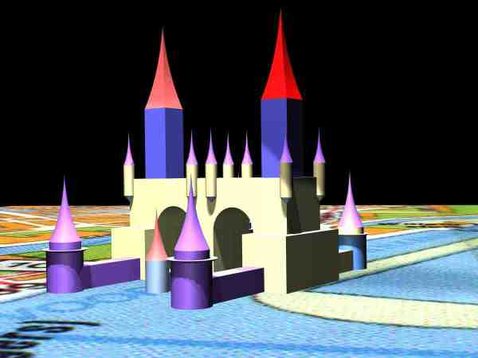
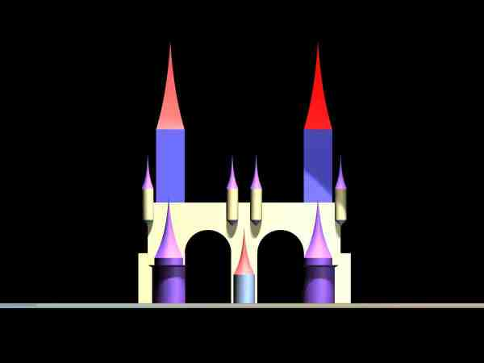
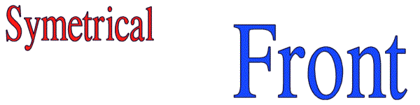
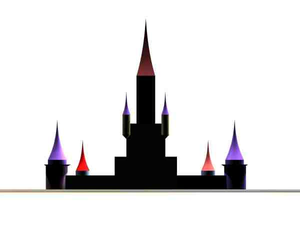
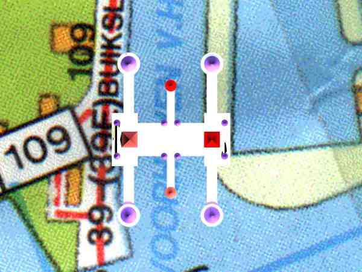
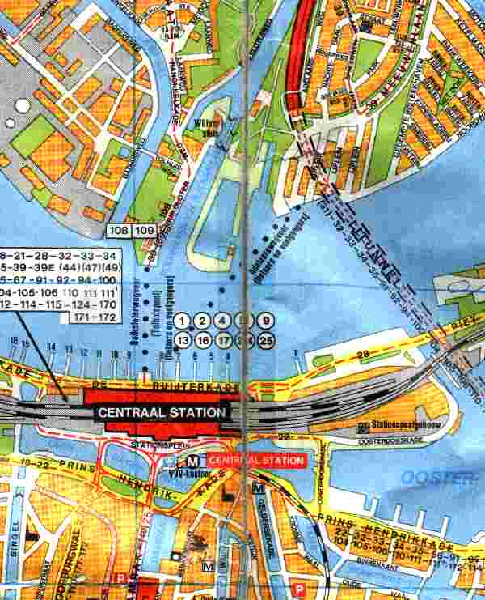

|  | |
|  | |
|  | |
|
LocationThe WaterPoort (WaterGate) is bridging a canal still in use by barges and yachts. It's located to the heart of Amsterdam, linked by a free ferry to the Central Station.The big water, IJ, it's overviewing was once the home to the tallships of the V.O.C. , sailing and trading world wide. Which made Amsterdam the richest city in the world then. ShapeLike an old fortress protecting the marine entrance to the city and made to glorify the success of it and honor it's former heroes, the water gate lays over the canal in a double bridge formation, with out reaching towers. All open air levels are public accessible, with restaurants and cafes in the levels opening to those, hence having a wide view over the water.
The building should not only have a great view for the people living in it,
but it should also offer a great view for the people having to watch it from their perspective.
Under the gates bridging the canal are also wooden hanging bridges
to allow walkers and bikers to cross the canal at a low level and to be able to sensate the feeling of
passing under the gates.
All towers are topped with red and purple shining spires.
Innercourts
The innercourts are covered by a transparant roof and forms a greenhouse in the atrium.
The inside is heated and has high rising botanic plants, bamboo, trees
and a round fountain in the middle.
The roof is dome shaped and composed of a hexagonal steelframes
covered with triple layers of ETFE (plastic),
which let 97% of the UV through.
Functions and LivelihoodAt the street level sunken arcades house the two storey shops, which face both to the outside streets and to the atriums. Shopping area at street level is 5.000 m² and indoor second floor 4.000m². Shop genre should be luxery furniture etc.In the atrium there should be organized regular markets with a cultural theme, like bookmarket, special homedecorations handmade.
Above the arched shops is a round going
balustrade which opens to
semi public offices like lawyers, accountans, housebrokers etc.
these too are in the two storey high arched units.
Higher laying floors could be allocated to office or luxery appartments.
The maintower and hence the highest floors with the
widest views should be appartments anyway.
EntranceThe entrance to the building is through two story high arched gates, which open to the innercourt. And should provide pride to the entrants. Underneath the building and the atrium is a parking. Daylight enters the parking through the fountains glass bottom.DecorationsBesides the raw outlines of the building as in this photo's the actual facades of the towers and walls will be individually designed and modified.PhilosophyWhat makes a building durable?What makes a building unique? Well, all old buildings in towns, which still draw crowds, were once build for rich people, that wanted to show off how well they were doing. And to show off their increadible richness they didn't order the cheapest building with the least decorations. No, they ordered lavish decorations and refined shapes. No cost nor effort was saved to make something remarkable. Every square millimeter of the outer and inner surface was used to express their state in the society or their view. And so if you look back and ask whether it was durable, you can answer: Yes, the art and decorations made it so. Most modern day achitecture is a waste of space and money, because a lack of effort in the design and decorations simply doesn't produce the added value to stand the tooth of time. | |
|  | |
|  | |
|  | |